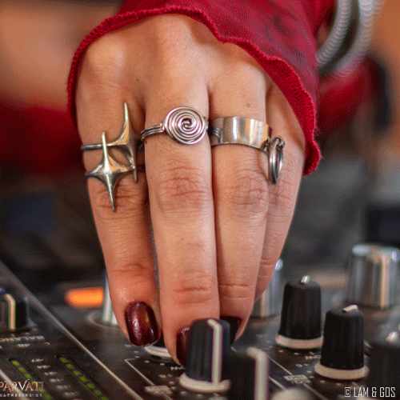

Parvati Records entiende la música como un viaje: una forma de exploración colectiva donde el ritmo,
la textura y la narrativa sonora construyen estados de percepción. Dentro del psytrance, su catálogo
se reconoce por una identidad profunda, orgánica y detallista, donde cada release no busca “impactar
rápido”, sino sostener una progresión que envuelve y transforma.
Más que un estilo cerrado, Parvati funciona como un universo: artistas, visuales y contexto cultural
se combinan para crear una experiencia coherente. Esta sección reúne dos puertas de entrada a ese
mundo: por un lado, los artistas y sus obras; por otro, una mirada a la estética sonora que define
la “firma” del sello.

Cada lanzamiento se integra a un relato común. La curaduría no es solo selección: es construcción de identidad. Por eso, aun con proyectos diferentes, existe un hilo reconocible en los grooves, las atmósferas y el equilibrio entre lo tribal, lo psicodélico y lo futurista.
La música del sello circula en contextos reales: festivales, gatherings y escenas globales donde la experiencia colectiva completa el sentido del sonido. Lo que nace en el estudio termina de construirse en comunidad.